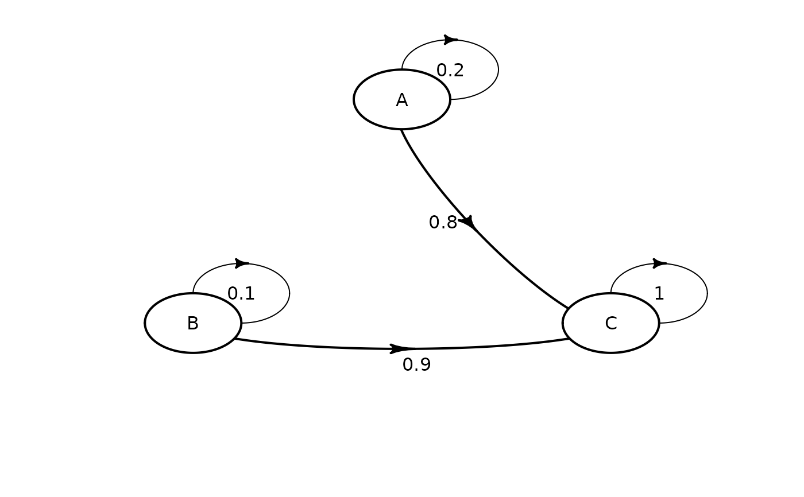

Define Transition Matrix for Markov Model
Source:R/matrix_define.R, R/matrix_plot.R
define_transition.RdDefine a matrix of transition probabilities. Probability
can depend on parameters defined with
define_parameters(), and can thus be time-dependent.
Arguments
- ...
Name-value pairs of expressions defining matrix cells. Can refer to parameters defined with
define_parameters(). Forplot, additional arguments passed todiagram::plotmat().- state_names
character vector, optional. State names.
- .dots
Used to work around non-standard evaluation.
- .OBJECT
An object of class
uneval_matrix.- x
An
uneval_matrixto plot.- relsize
Argument passed to
diagram::plotmat().- shadow.size
Argument passed to
diagram::plotmat().- latex
Argument passed to
diagram::plotmat().
Details
Matric cells are listed by row.
Parameters names are searched first in a parameter object
defined with define_parameters() and linked with the
matrix through define_strategy(); then in the
environment where the matrix was defined.
The complementary probability of all other row
probabilities can be conveniently referred to as C.
The matrix code can be re-indented for readability with
reindent_transition().
Only matrix size is checked during this step (the matrix must be square). Other conditions (such as row sums being equal to 1) are tested later, during model evaluation.
For the modify function, existing matrix cells are
replaced with the new expression. Cells are referenced by
name. Cell naming follows the cell_x_y convention, with
x being the row number and y the column number.
Examples
# simple 3x3 transition matrix
mat_1 <- define_transition(
.2, 0, .8,
0, .1, .9,
0, 0, 1
)
#> No named state -> generating names.
mat_1
#> A transition matrix, 3 states.
#>
#> A B C
#> A 0.2 0.8
#> B 0.1 0.9
#> C 1
plot(mat_1)
#> Loading required namespace: diagram

# referencing parameters
# rr must be present in a parameter object
# that must later be linked with define_strategy
mat_2 <- define_transition(
.5 - rr, rr,
.4, .6
)
#> No named state -> generating names.
mat_2
#> A transition matrix, 2 states.
#>
#> A B
#> A 0.5 - rr rr
#> B 0.4 0.6
reindent_transition(mat_2)
#> Loading required namespace: stringr
#> state_names = c(
#> "A" , "B")
#> 0.5 - rr, rr ,
#> 0.4 , 0.6
# can also use C
define_transition(
C, rr,
.4, .6
)
#> No named state -> generating names.
#> A transition matrix, 2 states.
#>
#> A B
#> A C rr
#> B 0.4 0.6
# updating cells from mat_1
modify(
mat_1,
cell_2_1 = .2,
cell_2_3 = .7
)
#> A transition matrix, 3 states.
#>
#> A B C
#> A 0.2 0.8
#> B 0.2 0.1 0.7
#> C 1
# only matrix size is check, it is thus possible
# to define an incorrect matrix
# this matrix will generate an error later,
# during model evaluation
define_transition(
.5, 3,
-1, 2
)
#> No named state -> generating names.
#> A transition matrix, 2 states.
#>
#> A B
#> A 0.5 3
#> B -1 2